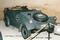
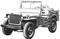
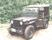
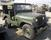
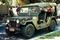

| Model | Years | Length | Wheel- base | Width | Track | Height Min/Max | Ground Clearance | Weight | Payload | Approach/ Departure | Tires | |
|---|---|---|---|---|---|---|---|---|---|---|---|---|
 | Kubelwagen | 1939-1945 | 147 | 94 | 63 | 53 | 44 / 65 | 11 | 1,600 | 1,000 | 30° / 31° | 5.25x16 |
 | MB/GPW | 1941-1945 | 131 | 80 | 62 | 49 | 52 / 72 | 9 | 2,400 | 800 | 45° / 35° | 6.00x16 |
 | M38 | 1950-1953 | 133 | 80 | 62 | 57 | 55 / 74 | 9 | 2,600 | 1,200 | 55° / 35° | 7.00x16 |
 | M38A1 | 1952-1971 | 139 | 81 | 61 | 57 | 57 / 74 | 8 | 2,700 | 1,200 | 46° / 34° | 7.00x16 |
 | M151A2 | 1960-1983 | 133 | 85 | 64 | 60 | 53 / 71 | 10 | 2,400 | 1,200 | 66° / 37° | 7.00x16 |
| Iltis | 1976-1986 | 156 | 79 | 60 | 48 / 49 | 72 | 10 | 3,200 | 1,200 | 41° / 33° | 6.50x16 | |
All sizes are to the nearest inch.
All weights are to the nearest 100 pounds.
The Early History: Bantam to MB
Thumbnail History:
1936 Willys-Overland Motors Inc. created.
1940 First prototypes by Bantam/Willys/Ford
1941 MB/GPW
1950 M38
1952 M38A1
1953 Willys-Overland sold to Henry J. Kaiser. Becomes Willys
Motors Inc.
1960 M151
1963 Willys becomes Kaiser-Jeep Corp.
1970 Kaiser purchased by AMC. Becomes Jeep Corp.
1971 Jeep Corp. general products division becomes AM General
Corp.
1983 AM General sold to LVT Corp.
1985 Iltis
1987 AMC purchased by Chrysler